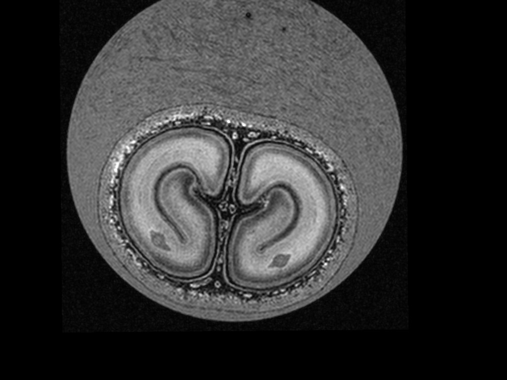
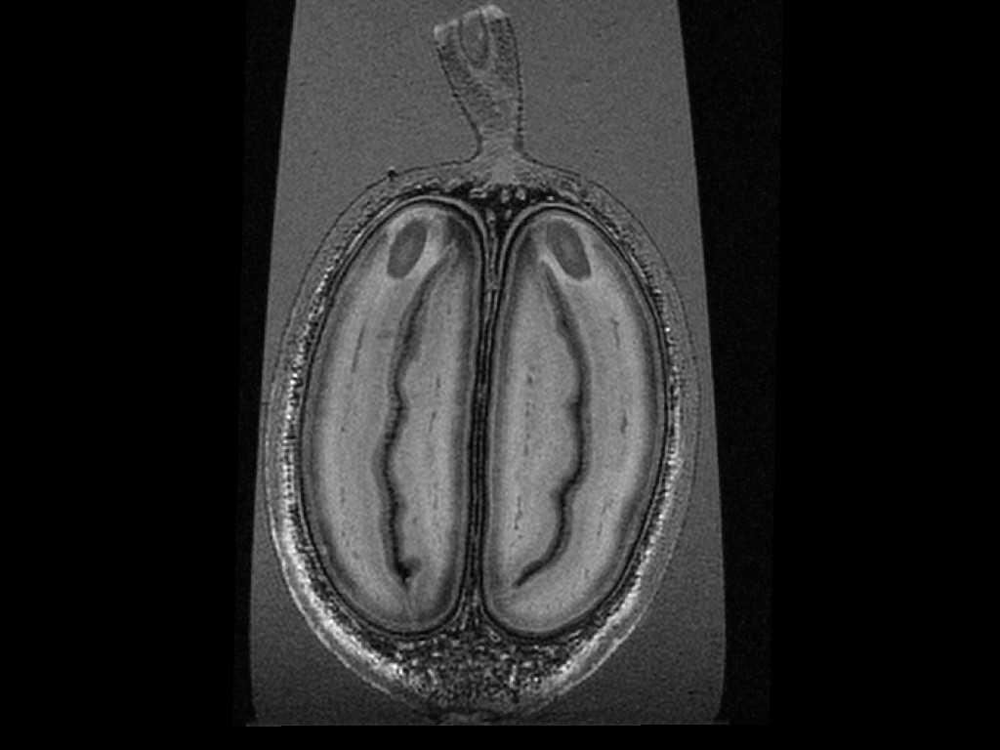

Coffee is a fruit - an extremely precious fruit. It takes at least 200 coffee cherries to brew the 50 ounce pot of coffee you enjoy each day. Each cherry contains two coffee beans [seeds] which take up the central space of the cherry. Within each coffee bean you will also find an embryo. This is the coffee baby plant. Once you plant the seed and it gets sufficient water, the embryo awakens. At that stage it starts degrading the coffee bean surrounding it to release its nutrients at a rapid pace to be able to grow into a proper small sidling with green leaves. Once that is done it can use its roots and the first leafs to grow on its own using the sun and the nutrients in the soil. So you see what we use to make the coffee we enjoy in the morning are the resources the embryo would use to initiate growth. You can see inside the coffee cherry using MRI as you can see in the video below.
 Coffee in general is sensible to environmental changes, diseases and pests that plaque tropical farms. Multiple insects and bugs can invest coffee plantations by eating away foliage, fruits or root stock. Such examples are the Coffee Leaf Miner (Leucoptera coffeella Guer), the Root Mealybug or the Coffee Berry Borer (Hypothenemus hampei). Diseases originate predominately in fungal infections of leafs, roots and fruits. In those cases the fungus divertes nutrients away from the growing fruits to help its own growth. Here are some of the most common diseases found in coffee. You can find out more at Wikifarmer.
Scientifically known as (Hemileia vastatrix Berk & Broome), this fungal disease affects coffee plants and causes yellow-orange spots on the leaves, which lead to defoliation and decreased coffee production. In addition, it does not allow the coffee berries to ripen at the same pace, which makes it take longer to collect the crop. The yellow spots under the leaves are dusty spores that disseminate quickly, especially in warm climates. It is spread by windborne spores of the fungus climate change, and increased global trade has led to its spread worldwide. I have mentioned it in previous articles, as the impact has been huge in recent years, and no coffee plantation worldwide is exempt from its threat.
This is found in coffee plantations above 700 m altitude, where there is an excess of shadow and a high humidity level with fresh temperatures. It provokes damage to the plant's branches, fruits, and leaves. Its dissemination is slow. Dark brown circular injuries that later turn light brown are a clear sign of this disease. The plant eventually loses an excessive amount of foliage, reducing its ability to photosynthesize.
This species of the fungal disease affects mainly Arabica species, and even though Robusta has shown high resistance levels, it is not entirely immune to this disease. Different variants appear throughout the countries where coffee is cultivated. This fungus might appear in the stems, the leaves, and the coffee varieties when they are not ripe (green berries). In advanced stages, the coffee Berries dry out and acquire a dark color. It is believed that plantations with low levels of fertilization and low soil moisture are more susceptible to this disease.
This fungal disease occurs in coffee plantations that lack proper nutrient balance. It spreads through wind and rain splash and thrives in humid and warm environments. The symptoms can be observed in newly generated leaves and tissue, appearing as brown spots that start at the edges of the coffee leaves and spread toward the center. The disease can also be seen on the branches, starting at the spots where leaves have fallen.
You can see that it is not about damage sustained by these pests and diseases but rather about taking away nutrients that should fill up the embryo's pantry, i.e. the coffee bean. Here you can see how that works out in real life. This coffee tree had a fungal infection. As you can see the cherry does look mostly normal from the outside. However MRI revealed that the coffee cherry actually controlled the nutrient supply to its 2 seeds in a way that it shut down access to nutrients for one of them to allow the other seed to grow normally. In essence one seed was aborted. You can see the effect on the storage tissue as it is just a desintegrated skeletal structure with little storage compounds remaining.